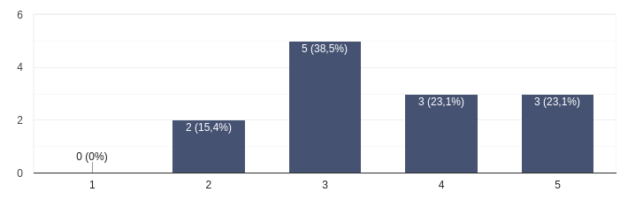
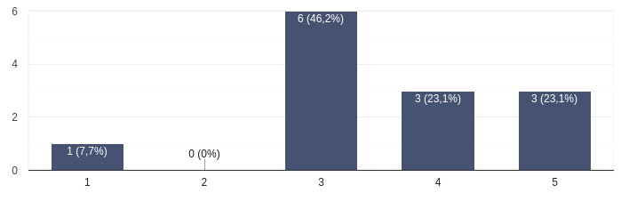
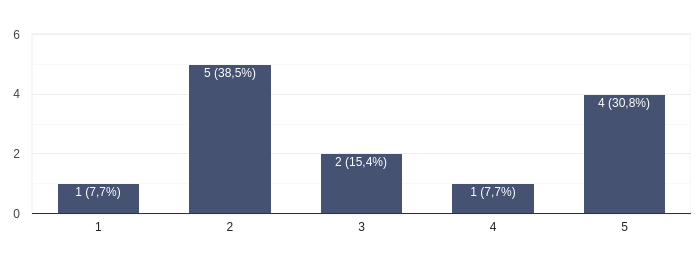
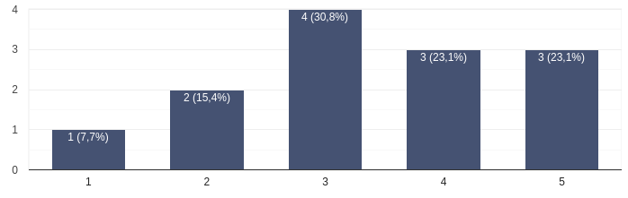
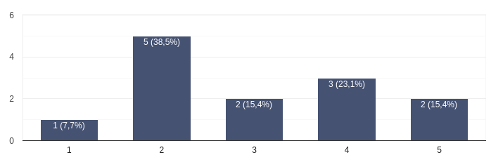
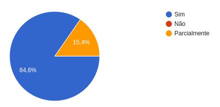
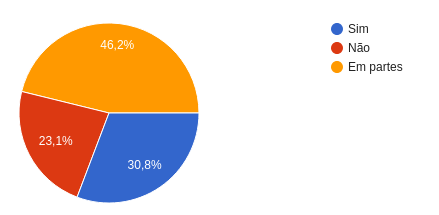

Retrospective – Sprint 2
Este documento apresenta os principais resultados da retrospectiva na Sprint 2 do projeto Vai Pela Sombra, com base nas respostas dos membros da equipe por meio de um formulário. O objetivo da retrospectiva é refletir sobre o que funcionou bem, o que pode ser melhorado e alinhar expectativas para as próximas sprints.
Avaliações Coletivas
Dificuldade das Tarefas
"Como você avalia a dificuldade dessa sprint?"
Neste quesito, a maior concentração está na nota 3 (38,5%), seguida pelas notas 4 e 5 com 23,1% cada. Isso indica que a maioria enfrentou algum nível de dificuldade, ainda que manejável. A ausência de notas 1 reforça que as barreiras não foram intransponíveis, mas a existência de dificuldades moderadas a altas para cerca de 61,6% dos participantes aponta para a necessidade de apoio ou melhor estrutura para a execução das tarefas.

Divisão de Tarefas
"Como você avalia a divisão de tarefas durante a sprint?"
O gráfico revela que a percepção sobre a divisão de tarefas é predominantemente mediana. A nota 3 obteve 46,2% das respostas, enquanto notas 4 e 5 somam 46,2%, indicando que a maioria considerou a divisão razoável ou satisfatória. Ainda assim, há um indicativo de que essa distribuição poderia ser mais justa ou clara, uma vez que a nota 1 também foi mencionada por uma minoria (7,7%).

Clareza das Atividades
"Como você avalia a clareza da atividade realizada, por exemplo, seu entendimento em determinada história de usuário?"
A avaliação sobre a clareza das atividades revelou um cenário preocupante, com a maior parte das respostas concentradas nas notas mais baixas. O destaque vai para a nota 2, com 38,5% das menções, seguida pela nota 5 (30,8%), o que demonstra uma percepção polarizada. Ainda que uma parte relevante tenha compreendido bem suas tarefas, a maioria indicou dificuldades em entender o que precisava ser feito, o que pode ter impactado diretamente na produtividade do grupo.

Comunicação com o Time
"A comunicação com o restante do time foi eficaz?"
O gráfico referente à comunicação mostra uma distribuição mais equilibrada entre as notas, com leve tendência positiva. A nota 3 lidera com 30,8%, e notas 4 e 5 somam 46,2% das respostas. Isso sugere que, apesar de alguns desafios, a comunicação dentro do grupo foi funcional para a maioria, possibilitando que os integrantes se expressassem e compreendessem os demais de forma razoável.

Engajamento e Motivação
"Você se sentiu motivado e engajado ao longo desta sprint?"
O gráfico relacionado à motivação e engajamento dos participantes aponta para um cenário majoritariamente crítico. A maior parte das respostas se concentra na nota 2 (38,5%), o que indica baixa motivação e envolvimento por parte dos membros. Embora haja uma presença significativa de avaliações positivas (23,1% com nota 4 e 15,4% com nota 5), a média geral é puxada para baixo, sugerindo que a atividade ou a dinâmica do grupo pode não ter despertado interesse suficiente.

Planejamento Realista
"Você sentiu que o planejamento da sprint foi realista com relação ao tempo e à carga de trabalho?"
A percepção dos participantes sobre o planejamento da sprint foi amplamente positiva. De acordo com o gráfico, 84,6% afirmaram que o planejamento foi efetivo, enquanto 15,4% consideraram que isso ocorreu apenas parcialmente. A ausência de respostas negativas ("Não") indica que, embora haja pontos a serem ajustados, o planejamento atendeu às expectativas da maioria.

Conclusão das Tarefas
"Você conseguiu concluir o que foi planejado para você nesta sprint?"
A análise do gráfico sobre a conclusão das demandas da sprint indica um cenário de execução parcial. Apenas 30,8% dos participantes afirmaram ter conseguido concluir todas as suas entregas, enquanto 46,2% relataram ter conseguido cumprir em partes e 23,1% não concluíram as tarefas. Esses dados apontam para desafios na estimativa de tempo, na definição de prioridades ou mesmo na organização interna do grupo. A elevada proporção de respostas parciais sugere que, embora o planejamento tenha sido bem recebido, a execução encontrou obstáculos que precisam ser compreendidos e ajustados nas próximas sprints.

Avaliação Individual
"Como você avalia sua própria participação no time durante esta sprint?"
As respostas demonstram um panorama bastante heterogêneo sobre o envolvimento dos membros durante a sprint. Algumas pessoas relataram uma participação ativa e constante, como observado nas menções de que estiveram “online e participativos”, enquanto outras assumiram diretamente limitações, classificando sua atuação como "mediana" ou até "extremamente baixa".
Um dos principais pontos de dificuldade apontados foi relativo ao entendimento, que aparece em mais de uma resposta ("Tive dificuldade em entender como as coisas deveriam ser feitas", "confusa", "falta de comunicação"). Também se destacou a falta de tempo e problemas de agenda, que limitaram a dedicação de alguns membros — algo recorrente em ambientes acadêmicos ou projetos voluntários com múltiplas demandas pessoais.
Questões técnicas e de integração entre áreas também foram relevantes, como no caso do participante que aguardava dependências de backend para iniciar sua task. Isso mostra uma fragilidade na coordenação e no repasse de informações entre integrantes, especialmente nas squads multidisciplinares.
Além disso, houve um relato mais crítico, que aponta diretamente a falta de colaboração de colegas de MDS, revelando não só frustrações pessoais, mas também possíveis falhas no senso de responsabilidade coletiva.
Em resumo, a maioria reconhece que poderia ter contribuído mais, seja por fatores internos (como tempo e compreensão) ou externos (como apoio do time, comunicação e entregas interdependentes). Isso reforça a importância de aprimorar a organização, o alinhamento entre funções e a transparência no andamento das entregas para as próximas sprints.
Avaliação em grupo
"Em relação aos outros membros do seu Squad (times), como foi o trabalho com eles?"
As respostas sobre o trabalho em equipe revelam um cenário de colaboração pontual, porém com falhas significativas de comunicação e alinhamento ao longo da sprint. Enquanto alguns participantes destacaram experiências positivas — como “grupo engajado”, “boa comunicação interna” e “pareamento sem problemas” —, essas ocorrências parecem ser exceções em meio a uma maioria que relata desafios.
A falta de comunicação é o principal ponto crítico apontado. Vários respondentes mencionam que houve pouca troca entre os membros (“ninguém mais se comunicava”, “faltou comunicação para dividir o que cada um deveria fazer”, “senti falta de alinhamento”), o que impactou diretamente no andamento e eficiência das tarefas. Em alguns casos, essa ausência de diálogo resultou em sobrecarga de tarefas para um único membro, o que pode comprometer a motivação e o senso de equipe.
Também foi apontada a baixa participação de alguns integrantes, especialmente próxima ao prazo de entrega — o que pode indicar uma má gestão de tempo ou comprometimento desigual entre os membros do time.
Ainda assim, há registros positivos que merecem destaque, como o bom entrosamento de alguns squads e o esforço em realizar pareamento, sugerindo que quando houve iniciativa individual, a colaboração funcionou bem.
O Que Funcionou Bem
"O que funcionou bem nesta sprint?"
Apesar dos desafios apontados anteriormente, os depoimentos revelam aspectos importantes que contribuíram positivamente para o andamento da sprint. Entre os pontos mais destacados está a estruturação técnica, como a introdução ao React, a utilização do Figma como referência visual e a divisão clara entre back e front-end, que proporcionaram maior segurança e agilidade na execução das tarefas.
A dinâmica de pair programming também aparece como um diferencial positivo, promovendo aprendizado colaborativo e maior engajamento. O apoio dos colegas e do líder de EPS é valorizado em diversas falas, tanto pela disponibilidade para tirar dúvidas quanto por facilitar o entendimento das tecnologias envolvidas.
A realização de dailys e reuniões pontuais também foi mencionada como elemento que favoreceu a comunicação e o alinhamento inicial, ainda que esse ritmo não tenha se sustentado ao longo da sprint para todos os grupos.
Outro ponto importante levantado foi a relevância de ter tasks bem definidas desde o início, sendo este um fator determinante para o avanço de alguns integrantes. Quando isso ocorreu, a produtividade aumentou visivelmente. Isso reforça a importância de uma gestão de tarefas clara e visível para todos.
No entanto, também é importante considerar que alguns participantes ainda não conseguiram avaliar o que funcionou ou sentiram que nada teve impacto positivo direto, indicando que os aprendizados e boas práticas ainda precisam ser mais consistentes e disseminados entre todos os membros da equipe.
Sugestões de Melhoria
As contribuições dos participantes revelam um forte desejo por mais estrutura, orientação e comunicação clara ao longo da sprint. Uma das demandas mais recorrentes é por maior detalhamento e divisão objetiva das atividades, indo além de simples descrições nas issues. Muitos relataram dificuldade em saber exatamente o que fazer ou como fazer, sugerindo que as instruções iniciais ainda são vagas ou técnicas demais para quem não tem familiaridade com determinadas tecnologias.
Além disso, há uma sugestão direta de promover momentos de capacitação prática, como DOJOs e tutoriais guiados, especialmente voltados a ferramentas ou conceitos técnicos com os quais nem todos estão familiarizados (ex: React, backend, uso de ORM). O DOJO de Figma foi citado como exemplo positivo que poderia ser replicado em outras áreas.
A falta de decisões claras sobre estruturação do projeto (como padrões de banco ou frameworks) gerou insegurança e paralisia para alguns.
Outros pontos apontados incluem:
-
A importância de um registro mais sistemático do que cada membro está realizando, como forma de acompanhamento e responsabilização.
-
Sugestões para incluir materiais complementares de estudo que ajudem a nivelar o conhecimento técnico.
-
A necessidade de melhorar a comunicação horizontal entre membros e promover mais momentos de alinhamento sincero e frequente.
Em resumo, as sugestões convergem para a construção de um ambiente mais organizado, formativo e colaborativo, com tarefas mais bem distribuídas e canais de aprendizado contínuo acessíveis a todos.
Análise do Scrum Master
Nesta sprint, foi possível observar avanços pontuais na organização e execução das tarefas, mas também desafios significativos que impactaram a entrega como um todo. Com base nas respostas obtidas por meio do formulário, a equipe demonstrou comprometimento parcial, com uma parcela dos integrantes engajada e atuante, enquanto outros enfrentaram dificuldades técnicas, de agenda ou de comunicação.
Entre os pontos que funcionaram bem, destaca-se a introdução ao React, o uso do Figma como base visual, e práticas como o pair programming, que ajudaram alguns membros a avançar de forma colaborativa. A atuação pontual de líderes de EPS e a realização de reuniões específicas também foram vistas como facilitadoras em alguns grupos. O planejamento da sprint foi bem avaliado por grande parte da equipe, o que indica uma boa definição inicial das metas.
Por outro lado, surgiram dificuldades recorrentes ligadas à comunicação interna, à falta de clareza nas tarefas e à dependência de membros específicos para avanços técnicos, especialmente nas squads que envolvem integração entre MDS e EPS. Alguns participantes relataram insegurança quanto ao que deveria ser feito, além de apontarem uma baixa participação de colegas e atrasos que impactaram o andamento coletivo. Houve também relatos de sobrecarga individual, o que reforça a necessidade de uma divisão de tarefas mais justa e acompanhada.
Em suma, as sugestões para melhoria incluem:
-
Maior detalhamento e clareza na criação das tasks, com responsabilidades bem distribuídas;
-
Realização de DOJOs e capacitações práticas para nivelar conhecimentos técnicos;
-
Atuação mais ativa dos EPS como líderes técnicos e guias das squads;
-
Melhoria na frequência e efetividade das comunicações, inclusive com uso mais estratégico das dailys;
-
Registro mais claro e constante do que está sendo feito por cada membro, evitando dispersão de responsabilidades.
Diante disso, como Scrum Master, vejo a necessidade de reforçar rituais de acompanhamento, estimular lideranças mais distribuídas dentro das squads e fomentar uma cultura de colaboração contínua. Com pequenos ajustes na comunicação e na clareza das entregas, acredito que a próxima sprint terá um desempenho significativamente mais equilibrado e eficiente.
Histórico de Revisão
| Data | Versão | Descrição | Autor(es) |
|---|---|---|---|
| 14/05 | 1.0 | Adicionando template da sprint planning, retrospective e review da Sprint2 | Rennan |
| 19/05 | 2.0 | Adicionando conteúdo da Retrospectiva | Suzane Duarte |